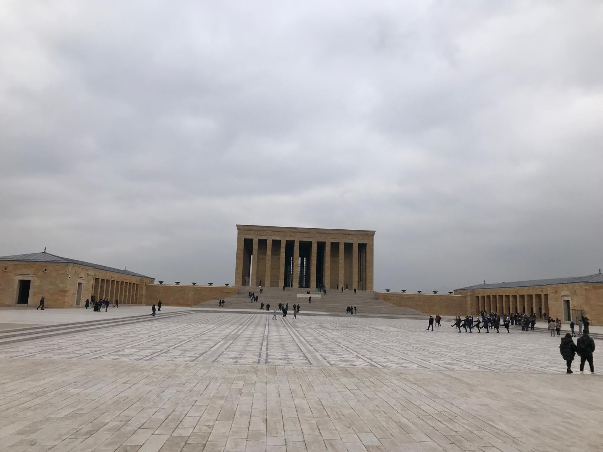
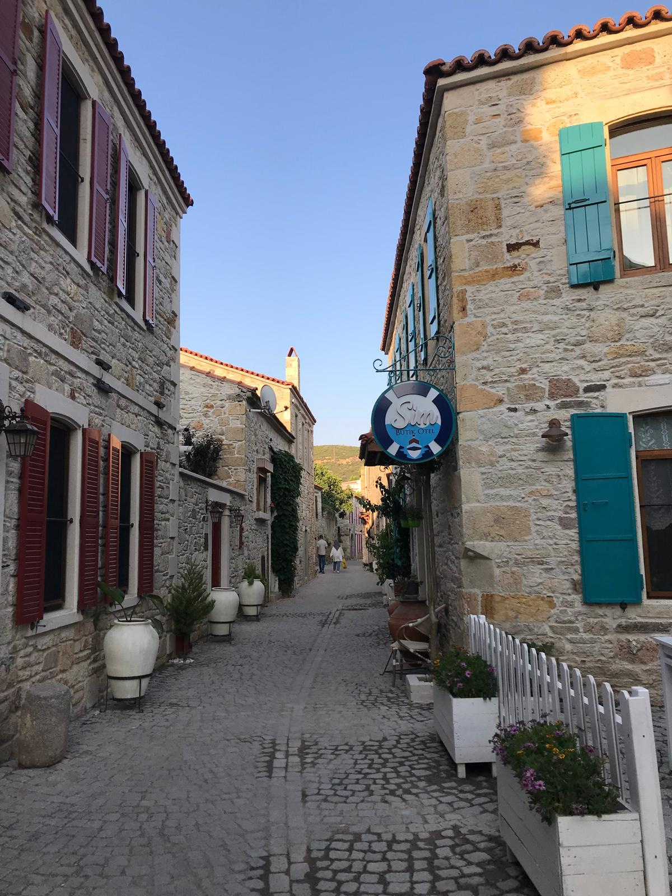
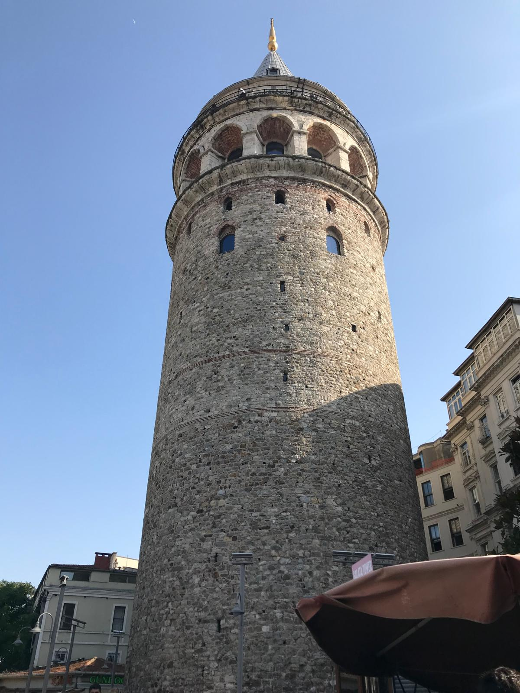
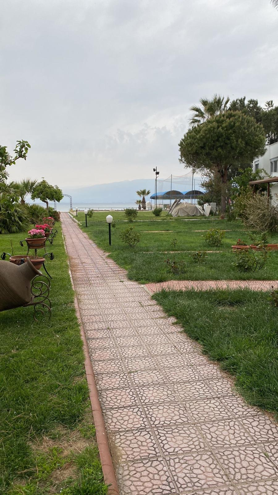
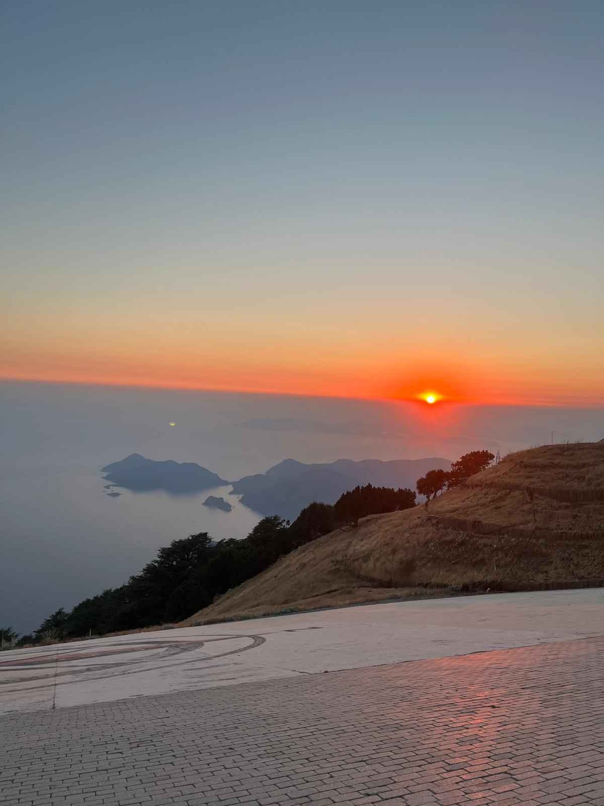
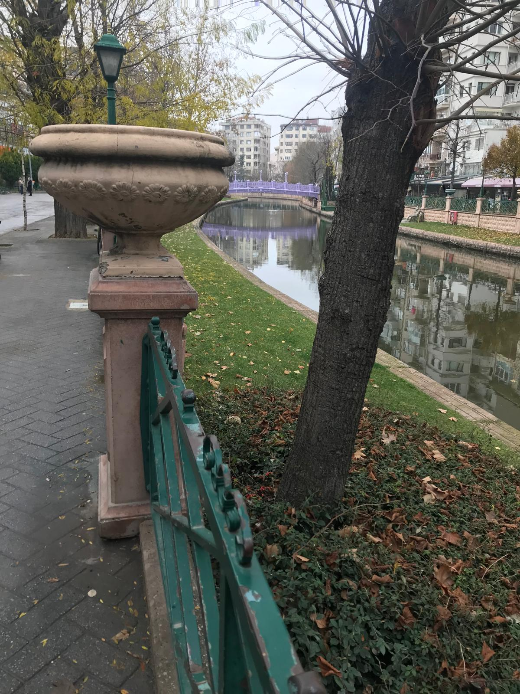
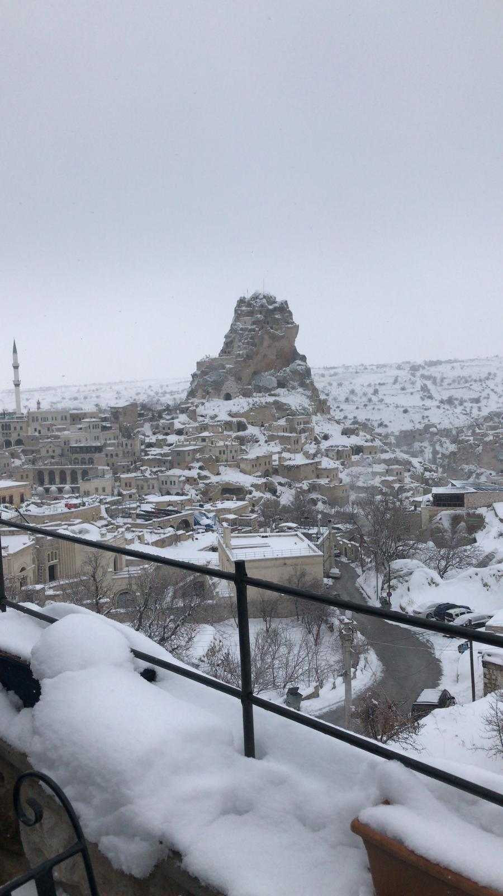

01 / SPATIAL EXPLORER
7 visited cities
A PERSONAL ATLAS / TÜRKİYE
Places visited.
Perspectives collected.
Seven cities, two ways to explore. A small record of my travels, mapped with OpenLayers and Leaflet.
07
visited cities
02
interactive maps
01
country
Markers appear above zoom level 5 . Click a marker for city details. Use + / − to zoom; the world stays within a single map extent.
02 / CITY EXPLORER
7 visited cities
Leaflet
Points represent approximate city centres, not exact places visited. Base map © OpenStreetMap contributors. Internet access is required to load maps.
THE CITY COLLECTION
My travel notes.

Central Anatolia
Ankara
The capital, at the heart of Anatolia.

Aegean
İzmir
A coastal city on the Aegean Sea.

Marmara
İstanbul
A city spanning the Bosphorus.

Mediterranean
Antalya
Where the Mediterranean meets the Taurus Mountains.

Aegean
Muğla
A gateway to the southwestern coast.

Central Anatolia
Eskişehir
An Anatolian city along the Porsuk River.

Central Anatolia
Nevşehir
A starting point for exploring Cappadocia.